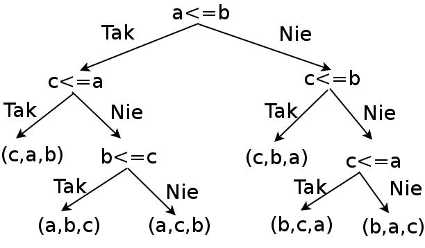

Dla N liczb możemy wykonać N*(N-1)/2 porównań między nimi. Jednak nie wszystkie porównania są niezbędne, aby posortować te liczby. Dla kilku przypadków sprawdzimy, ile maksymalnie porównań jest niezbędnych, a ile otrzymamy z podanego wzoru.
N - liczba elementów do posortowania N! - liczba możliwych permutacji N elementów k - liczba bitów (zero lub jeden) 2**k - liczba możliwych ciągów k-elementowych zer i jedynek k 2**k N! N 0 1 1 1 1 2 2 2 2 4 3 8 6 3 4 16 5 32 24 4 6 64 7 128 120 5
Dla większej liczby N nie jest łatwo podać dokładną liczbę porównań. Okazuje się, że dla dużego N dobre algorytmy sortowania wymagają liczby porównań proporcjonalnej do N*log(N). Zajmiemy się analizą sortowania kilku liczb.
Przy analizie wydajności algorytmów sortowania bierzemy pod uwagę liczbę instrukcji porównania i podstawienia, a także ilość pamięci potrzebnej do wykonania algorytmu.
SPECYFIKACJA Problem: Sortowanie kilku liczb. WEJŚCIE Ciąg N liczb. WYJŚCIE Uporządkowany ciąg tych liczb od najmniejszej do największej.
Rozważmy problem posortowania trzech liczb (a, b, c). Łatwo możemy stworzyć drzewo algorytmu.

W programie komputerowym dane są zwykle przechowywane w tablicy i zajmują pewną ilość pamięci. Przy sortowaniu dane przemieszczamy, ale nie do nowej lokalizacji, lecz w obrębie tablicy, przy wykorzystaniu ewentualnie jednego dodatkowego miejsca. Częstą operacją jest zamiana danych miejscami, przy wykorzystaniu tymczasowej lokalizacji. To zadanie wykonuje funkcja swap (trzy instrukcje podstawienia). Dane są przechowywane na liście.
def swap(L, left, right):
"""Zamiana miejscami dwóch elementów na liście."""
# L[left], L[right] = L[right], L[left]
item = L[left]
L[left] = L[right]
L[right] = item
Korzystając z drzewa algorytmu możemy napisać funkcję sort3(), która posortuję listę trzech liczb. Wykonamy maksymalnie trzy porównania i cztery podstawienia. Ilość instrukcji podstawienia jest minimalna.
def sort3(L):
"""Sortowanie listy trzech liczb w miejscu."""
if L[0] <= L[1]: # kolejność L[0], L[1]
if L[2] <= L[0]: # L[2], L[0], L[1]
item = L[2]
L[2] = L[1]
L[1] = L[0]
L[0] = item
else:
if L[1] <= L[2]:
pass # L[0], L[1], L[2]
else:
swap(L, 1, 2) # L[0], L[2], L[1]
else: # kolejność L[1], L[0]
if L[2] <= L[1]:
swap(L, 0, 2) # L[2], L[1], L[0]
else:
if L[2] <= L[0]: # L[1], L[2], L[0]
item = L[0]
L[0] = L[1]
L[1] = L[2]
L[2] = item
else:
swap(L, 0, 1) # L[1], L[0], L[2]
Jeżeli zwiększymy liczbę postawień do dziewięciu, to możemy zapisać funkcję sort3() w bardziej zwartej postaci. Sortowanie jest stabilne.
def sort3(L):
"""Sortowanie listy trzech liczb w miejscu - tylko swap."""
if L[0] > L[1]:
swap(L, 0, 1)
if L[1] > L[2]:
swap(L, 1, 2)
if L[0] > L[1]:
swap(L, 0, 1)
Na bazie sortowania trzech liczb możemy stworzyć drzewo algorytmu sortowania czterech liczb. Liczba porównań nie będzie przekraczać 5. Napiszemy funkcję sortującą listę czterech liczb w miejscu, korzystając z sekwencji kilku przestawień dwóch elementów. Wykonamy dokładnie 5 porównań oraz najwyżej 15 podstawień (liczba podstawień nie jest optymalna). Sortowanie nie jest stabilne.
def sort4(L):
"""Sortowanie listy czterech liczb w miejscu - tylko swap."""
if L[0] > L[1]:
swap(L, 0, 1)
if L[2] > L[3]:
swap(L, 2, 3)
# Porównanie większych elementów.
if L[1] > L[3]:
swap(L, 1, 3)
# Porównanie mniejszych elementów.
if L[0] > L[2]:
swap(L, 0, 2)
# Mamy min i max, porównujemy środkowe.
if L[1] > L[2]:
swap(L, 1, 2)
Optymalne sortowanie pięciu liczb nie jest proste, a drzewo algorytmu nie jest prostym powiększeniem drzewa sortowania czterech liczb. Napiszemy funkcję sortującą listę pięciu liczb w miejscu, korzystając z sekwencji kilku przestawień dwóch elementów. Wykonamy maksymalnie 7 porównań. Algorytm sortowania pięciu liczb zaproponował H. B. Demuth w swojej pracy doktorskiej z 1956 roku.
def sort5(L):
"""Sortowanie listy pięciu liczb w miejscu - używamy swap()."""
# Krok 1.
if L[0] > L[1]:
swap(L, 0, 1)
if L[3] > L[4]:
swap(L, 3, 4)
# Krok 2.
if L[1] > L[4]:
swap(L, 1, 4)
swap(L, 0, 3)
# Mamy [a, b, e, c, d].
# Krok 3, wstawiamy e, które siedzi na L[2].
if L[2] < L[1]:
if L[2] < L[0]:
swap(L, 2, 1)
swap(L, 1, 0) # mamy [e, a, b, c, d]
else:
swap(L, 1, 2) # mamy [a, e, b, c, d]
else:
if L[2] > L[4]:
swap(L, 2, 4) # mamy [a, b, d, c, e], c jest za d!
# Krok 4, umieszczamy c, które jest na razie na L[3].
if L[3] < L[1]:
if L[3] < L[0]:
swap(L, 3, 2)
swap(L, 2, 1)
swap(L, 1, 0)
else:
swap(L, 3, 2)
swap(L, 2, 1)
else:
if L[3] < L[2]:
swap(L, 2, 3)